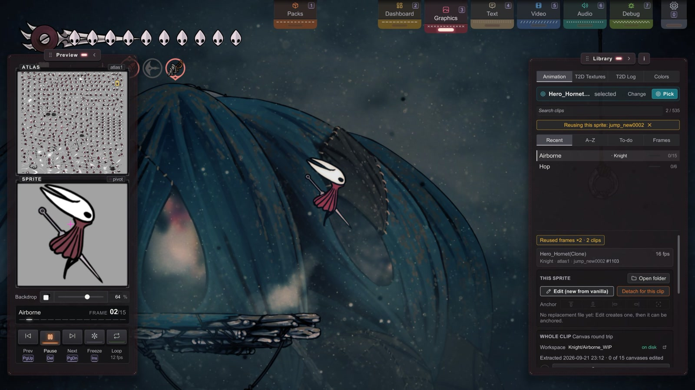
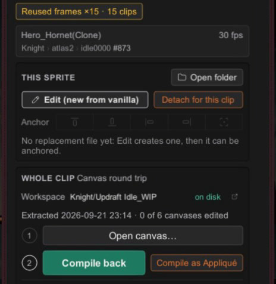

BEx1 Reused Frames and Appliqué
Sprites · extra.
One drawn frame can appear in many animations.
So an edit can reach further than you meant.
See the reach before you paint, and give one animation its own art with Appliqué.
You'll be able to: tell, before you repaint a frame, every other animation that changes with it, and replace a sprite for one clip only.
The one fact that matters
Stitchwork replaces a sprite by identity: a single PNG named for one sprite (collection/). The game's animations don't each carry their own copy of that art; many frames point at the same sprite. So when you replace one sprite, every frame in every animation that points at it changes too.
That's not a bug: it's how the game saves memory. Hornet's run, idle and turn might all reuse the same cloak frame. You're not editing "a frame", you're editing a sprite that some number of frames borrow.
See the reach before you paint
Open Graphics (3). Choose Animation in the Library's mode row. Select Hornet. Step to frame 2 of the Airborne clip. The console's first line reads:
Reused frames ×2 · 2 clips
Click it, and the clip list narrows to the clips that use this sprite, with an amber "Reusing this sprite: …" chip above the list. One of them is Hop: that second Airborne frame is a Hop frame. Repaint it for your airborne pose, and your Hop clip changes to match. Click the chip to see every clip again.
When the line reads "Only used here — safe to edit in isolation.", nothing else moves: paint freely.
The readout is computed from the game's loaded data, so it stays current after a game update. That's why this page teaches you to find reuse rather than giving you a table that would go stale with the next patch.

What to do about a shared frame
- You want every use to match (a recolored cloak, the same everywhere): one PNG covers every use, which is less art to make. Reuse works for you.
- You want one clip to differ: use Appliqué, below.
- Getting a whole animation's sprites: Ready N sprites for edit (Whole clip, in the console) copies each distinct sprite once; it never hands you the same shared frame five times.
Appliqué: art for one clip
Appliqué (like the sewing technique: a patch applied on top) scopes a replacement to one named clip. The vanilla sprite, and every other clip that uses it, stays as it is.
Sprites/<CollectionName>/Clips/<ClipName>/<SpriteName>.pngThat's the whole mechanism from a pack's point of view: a Clips/ folder between the collection and the file. The folder name is the clip's name in the game (case doesn't matter). One file patches the sprite at every occurrence within that clip. A per-clip file beats a shared replacement for that clip; other clips keep the shared file, or vanilla if there is none. Anchor and pivot tags (Anchors) work as they do on shared replacements.
The clip list marks a clip that has per-clip frames with an orange A; hover it for how many frames have one.
Two ways to make it
- One sprite: Detach for this clip (the console's This sprite group). One click copies a starting image into
Clips/<ClipName>/and opens it: your own replacement from the working folder when it has a plain (untagged) file, else the vanilla sprite. Edit, save, and only this clip changes. If the clip already has a per-clip file, the button just opens it. - A whole animation: Compile as Appliqué (the console's Whole clip group, step 2). It's the animation canvas round trip, but the compile lands in the per-clip folder instead of the shared one: Open canvas, edit the onion-skin canvas, then Compile as Appliqué.

Good to know
- It's art-on-rails. Appliqué changes what a clip's frames look like, not their count or timing: the animation's motion is the game's.
- A clip name is one folder.
Clips/<ClipName>/applies to every loaded clip with that name, in any animation library. A crest can bring its own clip with the same name as one of Hornet's, and both then take the per-clip art. - A new canvas starts from shared art. Open canvas on a clip with per-clip files draws the shared (or vanilla) frames, not the per-clip ones, and the log says so.
- Same-named collections all receive the per-clip art, as the default sprite paths do (Sprite Paths, path #5).
- Rotated frames. A few vanilla frames are stored sideways in the atlas. The canvas draws them upright, so check them in the game after a compile. If a per-clip replacement shows mirrored where a shared one doesn't, report it with the clip's name.
- Hot reload, pack switching and file deletion behave as for shared replacements.
- A higher pack's sheet wins. Like individual files, a
Clips/frame shows over a sheet from its own pack only. When a pack higher in the list ships the sheet for that frame's atlas, the frame shows the sheet, and the Covered list names the clip. Move your pack above it to show your frames. Your working folder ranks below every pack, so an active pack's sheet also hides theClips/frames in your working folder. The clip's orange A does not count the frames that a sheet hides. - It can be switched off. Appliqué is on by default. To switch it off, use the Appliqué switch in Settings › Rendering, or
EnableAppliqueunder[Rendering]inStitchwork.cfg. When it's off, the two buttons are disabled and say why. - Older builds only: a
Sprites/folder is Stitchwork's internal copy, which an older build could write into. Stitchwork never reads it now, and the log names it once: move your drawings out of it, then delete it.Stitchwork_Shadow_<collection>/
Next
- Animation Canvas Workflow: the canvas round trip that Compile as Appliqué uses.
- The Animation Mode: the console, button by button.